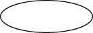

Lección: Trabajando con la Geometría
Dibujando Primitivas Geométricas
La IPA 2D de Java proporciona varias clases que definen objetos geométricos comunes tales como puntos, líneas,
curvas, y rectángulos. Estas clases de geometría son parte del paquete
java.awt.geom.
La interfaz
PathIterator define métodos para recuperar elementos de una ruta.
La interfaz
Shape proporciona un
conjunto de métodos para describir e inspeccionar objetos de trayectoria geométrica. Esta interfaz está
implementada por las clase
GeneralPath
y otras clases de geometría.
Todos los ejemplos representados en esta sección crean geometrías usando el paquete java.awt.geom
y después las presenta usando la clase
Graphics2D. Para
empezar obtenga un objeto Graphics2D, por ejemplo conviertiendo el parámetro
Graphics del método paint().
public void paint (Graphics g) {
Graphics2D g2 = (Graphics2D) g;
...
}
Punto
La clase
Point crea un punto
representando una ubicación en (x,y) del
espacio de coordenadas. Las
subclases Point2D.Float y Point2D.Double proporcionan correspondientemente flotante y
doble precisión para almacenar las coordenadas del punto.
//Crea un Point2D.Double
Point2D.Double point = new Point2D.Double(x, y);
Para crear un punto con las coordenadas 0,0 use el constructor predeterminado, Point2D.Double().
Puede usar el método setLocation para establecer la posición del punto como sigue:
-
setLocation(double x, double y)– Para establecer la ubicación del punto - definiendo las coordenadas como valores double. -
setLocation(Point2D p)– Para establecer la ubicación del punto usando las coordenadas de otro punto.
Además, la clase Point2D tiene métodos para calcular la distancia entre el punto actual y un punto
con coordenadas dadas, o la distancia entre dos puntos.
Línea
La clase
Line2D representa
un segmento de línea en (x, y) del espacio de coordenadas. Las subclases Line2D. Float y
Line2D.Double especifican líneas en coma flotante y precisión doble. Por ejemplo:
// dibuja Line2D.Double
g2.draw(new Line2D.Double(x1, y1, x2, y2));

Esta clase incluye varios métodos setLine() para definir los puntos finales de la línea.
Alternativiamente, los puntos finales de la línea podrían ser especificados usando el constructor para la clase
Line2D.Float como sigue:
-
Line2D.Float(float X1, float Y1, float X2, float Y2) -
Line2D.Float(Point2D p1, Point2D p2)
Use el objeto
Stroke en la clase
Graphics2D para definir el trazo de la ruta de la línea.
Curvas
El paquete java.awt.geom le permite crear un segmento de curva cuadrática o cúbica.
Segmento de Curva Cuadrática
La clase
QuadCurve2D implementa la interfaz Shape. Esta clase representa un segmento
de curva paramétrica cuadrática en (x,) del espacio de coordenadas. Las subclases
QuadCurve2D.Float y QuadCurve2D.Double especifican una curva cuadrática en coma
flotante y doble precisión.
Varios métodos setCurve se usan para especificar dos puntos finales y un punto de control de la
curva, cuyas coordenadas pueden ser definidas directamente, por las coordenadas de otros puntos y usando una
matriz determinada.
Un método muy útil, setCurve(QuadCurve2D), establece la curva cuadrática con los mismos puntos
finales y el punto de control de una curva suministrada. Por ejemplo:
// crea un nuevo QuadCurve2D.Float
QuadCurve2D q = new QuadCurve2D.Float();
// dibuja draw QuadCurve2D.Float con las coordenadas establecidas
q.setCurve(x1, y1, ctrlx, ctrly, x2, y2);
g2.draw(q);

Segmento de Curva Cúbica
La clase
CubicCurve2D también implementa la interfaz
Shape. Esta clase
representa un segmento de una curva paramétrica cúbica en (x,y) del espacio de coordenadas. Las subclases
CubicCurve2D.Float y CubicCurve2D.Double especifica una curva cúbica en coma
flotante y doble precisión.
La clase CubicCurve2D tiene métodos similares para establecer la curva a los de la clase
QuadraticCurve2D, pero con un segundo punto de control. por ejemplo:
// crea un nuevo CubicCurve2D.Double
CubicCurve2D c = new CubicCurve2D.Double();
// dibuja CubicCurve2D.Double con las coordenadas establecidas
c.setCurve(x1, y1, ctrlx1,
ctrly1, ctrlx2, ctrly2, x2, y2);
g2.draw(c);

Rectángulo
Las clases que especifican primitivas representadas en el siguiente ejemplo extienden la clase
RectangularShape, que implementa la interfaz Shape y agrega unos cuantos métodos
propios.
Estos métodos le permiten obtener información sobre la ubicación de una forma y su tamaño, para examinar el punto central de un rectángulo, y para establecer los límites de la forma.
La clase
Rectangle2D
representa un rectángulo definido por una ubicación (x, y) y una dimensión (w x h). Las subclases
Rectangle2D.Float y Rectangle2D.Double especifican un rectángulo en coma flotante y
doble precisión. Por ejemplo:
// dibuja un Rectangle2D.Double
g2.draw(new Rectangle2D.Double(x, y,
rectwidth,
rectheight));

La clase
RoundRectangle2D representa un rectángulo con las esquinas redondeadas definido por una
ubicación (x, y), una dimensión (w x h), y el ancho y alto del arco de la esquina. Las subclases
RoundRectangle2D.Float y RoundRectangle2D.Double especifican un rectángulo redondeado
en coma flota y precisión doble.
El rectángulo redondeado se especifica con los parámetros siguientes:
- Ubicación
- Ancho
- Alto
- Ancho del arco de esquina
- Alto del arco de esquina
Para establecer la ubicación, tamaño, y los arcos de un objeto RoundRectangle2D, use el método
setRoundRect(double a, double y, double w, double h, double arcWidth, double arcHeight). Por
ejemplo:
// dibuja RoundRectangle2D.Double
g2.draw(new RoundRectangle2D.Double(x, y,
rectwidth,
rectheight,
10, 10));

Elipse
La clase
Ellipse2D
representa una elipse definida por un rectángulo delimitador. Las subclases Ellipse2D.Float y
Ellipse2D.Double especifican una elipse en coma flotante y precisión doble.
La elipse se define completamente por una ubicación, una anchura y una altura. Por ejemplo:
// dibuja Ellipse2D.Double
g2.draw(new Ellipse2D.Double(x, y,
rectwidth,
rectheight));

Arco
Para dibujar un fragmento de una elipse, use la clase
Arc2D. Esta clase
representa un arco definido por un ractángulo delimintador, un ángulo de inicio, una extensión angular, y un
tipo de cierre. Las subclases Arc2D.Float y Arc2D.Double especifican un arco en
coma flotante y precisón doble.
La clase Arc2D define los tres tipos de arcos siguientes, representados por sus constantes
correspondientes en esta clase:OPEN, PIE y CHORD.

Varios métodos establecen el tamaño y parámetros del arco:
- Directamente, por coordenadas
- Por
Point2DyDimension2Dsuministrados - Copiando un
Arc2Dexistente
También, puede usar el método setArcByCenter para especificar un arco desde un punto central,
dado por sus coordenadas y un radio.
// dibuja Arc2D.Double
g2.draw(new Arc2D.Double(x, y,
rectwidth,
rectheight,
90, 135,
Arc2D.OPEN));
El código de ejemplo
ShapesDemo2D.java contiene implementaciones de todas las primitivas geométricas descritas.
Para más información sobre las clases y métodos representados en esta sección, vea la especificación
java.awt.geom.